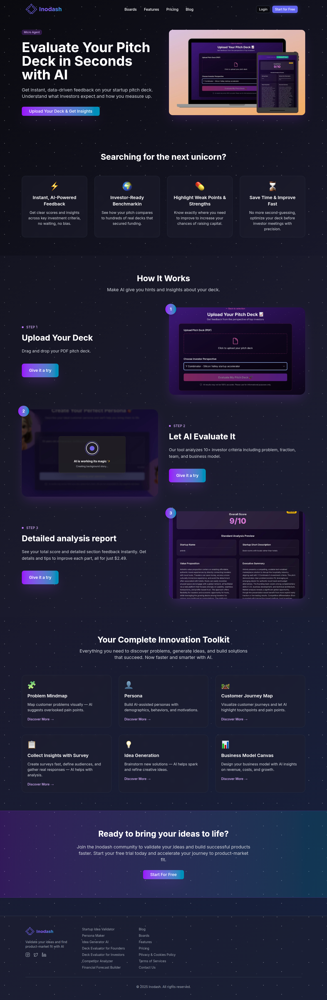
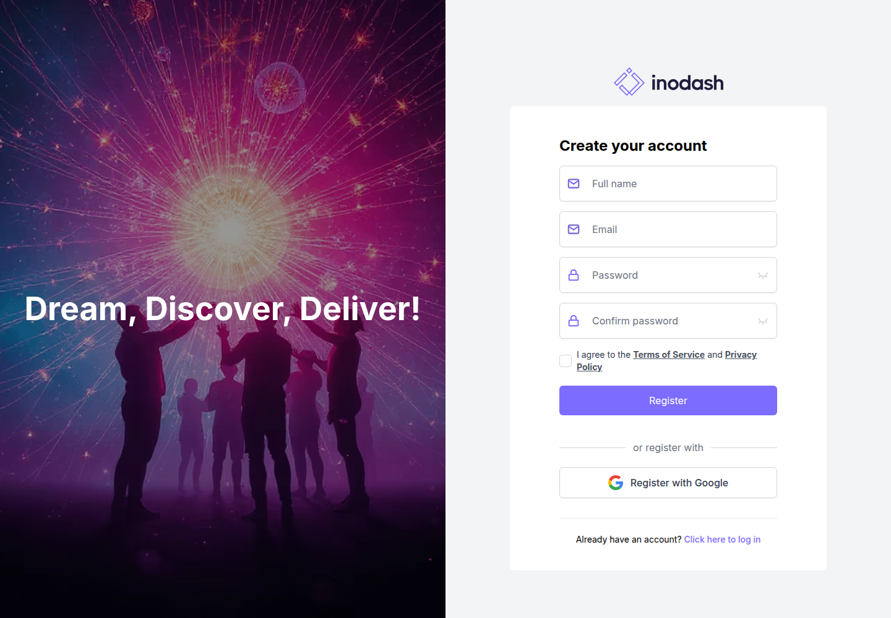

Profile
- Company
- Inodash
- Url
- https://inodash.com/ai-pitch-deck-evaluator
- Source Category
- AI pitch-deck reviewers
- Research Status
- Deep Cited Research / Draft Complete
- Current Status
- live - fetched https://inodash.com/ai-pitch-deck-evaluator directly on 2026-07-19, HTTP 200, copyright footer '© 2025 Inodash' (footer appears not yet updated to 2026, but site is otherwise fully functional with active feature set).
- Founded Launch Year
- not found / precise year not located; founder identified as Yavuz Çingitaş per Tracxn/RocketReach aggregator listings, but a specific founding year was not confirmed via primary source
- Company Age
- not found / no public source
- Hq Country
- United Kingdom - London (per RocketReach/Tracxn aggregator data; not confirmed via Inodash's own site)
- Operating Area
- global (English-language product, no geographic restriction found)
- Target Users
- early-stage founders and innovation/product teams needing idea validation, persona building, and pitch deck evaluation; positioned for 'enterprise innovation teams to promising startups'
- Product Category
- AI pitch/deck review; startup idea validation & product-market-fit toolkit (Problem Mindmap, Persona, Customer Journey Map, Survey, Idea Generation, Business Model Canvas)
Product Flows
- Swipe Card Interface
- not found / no evidence of swipe UI; core interaction is drag-and-drop file upload plus dashboard 'Boards'
- Mutual Match
- not found / no public source
- Ai Matching Scoring
- not found / no evidence of investor-matching; product does not appear to connect founders with investors
- Ai Deck Scoring
- yes
- Founder To Founder Flow
- not found / no evidence
- Founder To Investor Flow
- not found / no evidence of any investor connection, matching, or outreach feature - Inodash is a pure standalone self-serve feedback/validation tool with no path to real investors; it has a 'Deck Evaluator for Investors' product variant (evaluating decks from an investor's perspective) but this is still a scoring tool, not a live matchmaking flow
- Project Profiles
- yes - AI boards/workspaces
- Messaging Collaboration
- yes - comments and real-time collaboration
- Mobile App
- not found / no App Store/Google Play listing located
- Web App
- yes
Security & Documents
- Nda Gated Unlock
- not found / no public source
- Data Room
- not found / no public source
- E Signature
- not found / no public source (original pass marked 'yes' with no supporting evidence found in this deeper review; likely a false positive from automated keyword matching - downgraded to not found)
- Meeting Prep Ai Briefing
- yes - custom investor criteria / investor perspective review
Pricing, Funding & Traction
- Pricing Model
- Pay-per-use / freemium: deck evaluation report priced at $2.49 per use ('all for just $2.49'); broader toolkit (Persona, Idea Generation, Business Model Canvas, etc.) has a 'Start for Free' entry tier and paid tiers per Pricing page
- Business Model
- Low-cost micro-transaction SaaS (single-report pricing) combined with a broader freemium innovation-toolkit subscription
- Total Funding
- not found / no public source; no Crunchbase profile or funding announcement located
- Funding Rounds
- not found / no public source
- Investors
- not found / no public source
- Funding Source Type
- likely bootstrapped (no funding evidence found)
- Last Funding Date
- not found / no public source
- Users Traction
- not found / no public source (no user/customer count disclosed on scraped pages)
- Deals Funding Facilitated
- not applicable - product does not facilitate funding deals
- Partnerships
- not found / no public source
- Media Coverage
- not found / no notable press coverage located; listed on AI tool directories (ai-directory.com, softwaresuggest.com, siift.ai, Product Hunt) but no journalistic coverage found
- Product Update Activity
- not found / limited evidence; footer copyright still reads 2025 despite mid-2026 fetch, a mild signal of lower update cadence than peers in this batch
- Acquisition Rebrand History
- not found / no evidence of acquisition or rebrand
Scores
- Product Overlap Score
- 2
- Feature Maturity Score
- 2
- Market Traction Score
- 1
- Funding Strength Score
- 1
- Ai Depth Score
- 2
- Nda Security Strength Score
- 1
- Network Moat Score
- 1
- Direct Threat Score
- 1.5
- Source Confidence
- Low
Evidence Notes
- Primary Sources
- https://inodash.com/ai-pitch-deck-evaluator
https://inodash.com/
https://inodash.com/features
https://inodash.com/ai-pitch-deck-evaluator-for-investors - Secondary Sources
- https://tracxn.com/d/companies/inodash/__bSvh9zLvSJiAvPW07XtN0yBCZlyWLRWE7W3dlN2_qWo#founders-and-board-of-directors
https://rocketreach.co/inodash-profile_b7899815c248bcc3
https://www.producthunt.com/products/inodash - Unsupported Claims
- HQ (London) and founder name (Yavuz Çingitaş) rely on third-party aggregator sites (Tracxn/RocketReach) rather than Inodash's own About page, which was not located; treat as lower-confidence.
- Contradictions
- Site footer copyright reads '© 2025 Inodash' at time of a July 2026 fetch, suggesting either a stale footer or reduced active maintenance - flagged but not treated as evidence of the product being dead, since the app itself is fully functional.
- Last Checked
- 2026-07-19
- Notes
- Weakest company in the batch on funding, traction, and press verifiability - genuinely could not confirm much beyond the product feature set itself despite real search effort (no Crunchbase page, no founding year, no user counts, no media coverage found). It is a standalone deck-scoring/idea-validation micro-tool with zero investor-connection or matchmaking flow, making it a low direct threat to BizMatch's core model.
Registration Flow
Research date: 2026-07-19. Screenshots are sanitized public copies from the private registration-flow capture set; credentials, tokens, verification links/codes, browser chrome, and private identifiers are not intentionally published.
Outcome: stopped at required truthful-details / submission boundary.
Stop point: Untouched Create your account form at https://dashboard.inodash.com/register, before entering Full name, Email, Password, or Confirm password; accepting Terms of Service/Privacy Policy; submitting registration; opening Google OAuth; requesting email verification; uploading a pitch deck; selecting an investor perspective; purchasing the $2.49 detailed analysis; or making any fundraising submission or financial commitment
Blocker / boundary: Inodash's direct registration form requires a real Full name in addition to email, password, password confirmation, and mandatory terms/privacy consent. The authorized credential file provides only the registration email and a site-specific password, so no identity was invented and no private credentials were entered. Beyond registration, the evaluator requires a pitch-deck upload and advertises the detailed analysis for $2.49, which are separate fundraising-submission and payment stop conditions.
- Official AI Pitch Deck Evaluator and free-start entry. Inodash's official evaluator page presents AI feedback and investor-readiness benchmarking for startup pitch decks. Its published workflow is Upload Your Deck, Let AI Evaluate It, and Detailed analysis report. The report copy discloses a $2.49 price, while a separate Start for Free action leads to the account-registration route.
- Untouched direct-email registration form and stop point. The official Start for Free action opens Inodash's Create your account form. Direct registration requires Full name, Email, Password, Confirm password, and agreement to the Terms of Service and Privacy Policy. A Register with Google option and existing-account login link are also visible. The form was left empty because the authorized credentials do not include a truthful full name; Google OAuth was not opened.

